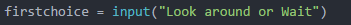
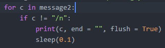
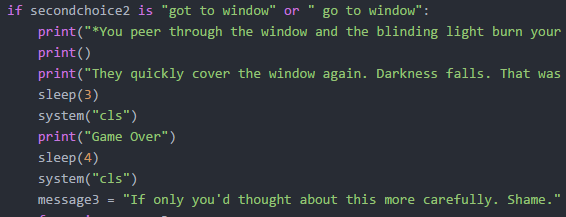
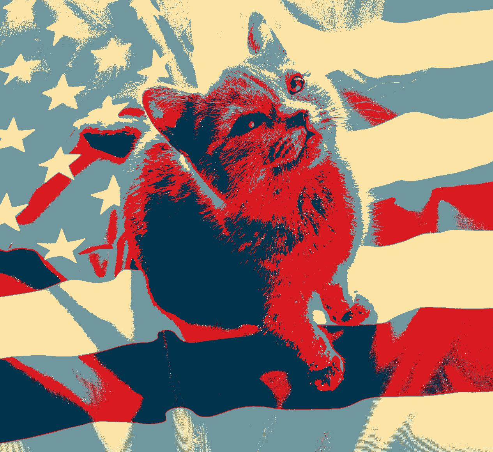

别人是别人
Sarah Wright
I'm a unconvincingly 16 year old transient. I rarely spent enough time on the things that are important, but reserve a wealth of time for playing uke by myself on sunny days (a possible reason for my vitamin d deficiency). I enjoy drawing, reading, traveling abroad, and spending inordinate amounts of time on very specific projects. My interest in coding centers primarily on robotics and game design, though graphic design also strikes my fancy. As can be gleaned from my writing, I enjoy utilizing my extensive vocabulary to make very simple things sound extrodinarily complicated. I believe in genies and dreams, but staunchly reject the existence of unicorns (it's simply too implausible).
井底之蛙
Fun Facts
I play both ukulele and guitar, albeit poorly
I have never broken a bone, despite claiming to have after several injuries
I have crawled over ancient ruins in Sicily
Reflections
style= "color:lightblue;"My website has a simple color scheme that utlizes shades of pink and purple, which are more friendly to color blind users. The text is also a good size for who vision impairments. The website doesn't carry any heavy files that would cause difficulty for those with slower internet.
I enjoyed the look of the templates others used.
I'm proud of the aesthetics of my website
Core 4
Variables
My text adventure contained many variables, including several to represent blocks of text and user inputs.
Loops
Loops are vital in simplyfying otherwise complicated and lengthy blocks of code in simpler sections of efficient code
Conditionals
Conditionals are vital in developing user interactions, I personally utlized several if statements in my attempt to develop a branching storyline
Function
For this code in particular I did not utilize any function as the type of program I was making didn't really benefit from them, however functions can simplify code.
Lists
Lists are an incredibly useful tool for storing large amounts of data in the same place in organized manner.
For the past two days I have worked in many groups and with several partners to learn about lists and how to utilize them in our code. The most productive group, however, was not a group but a partnership. I worked best with Hannah, who sits to my left, as we were able to eaily communicate and figure things out together
Funny StoryBefore Obamicon
After Obamicon
RoboticsWe began our robotics unit by playing around on tinkercad, attempting to build circuit with their simulation software. This was unfortunately quite difficult, but we perservered
The very next day we ventured down the rabbithole and began to work with the real thing, arduino boards with servos and wheels already attached. Our first task was to build a simple circuit on the availible breadboard that would light an led. My group quickly accomplished this, and moved on the lighting several leds and making them blink. However, we reached a point where our work suddenly refused to function, despite the fact that our circuit was infallible. Our primary instructor, Emanuel, came over to help and somehow made it far worse, going as far as to blow one of our leds. We did chide him endlessly, but is was all in good fun. H e ended up finding the error, which was caused by our arduino disconnecting from the board above it. The whole experience taught me an important lesson on patience.
We then transferred our attention to wearable tech, specifically the Adafruit Circuit Playground. We used the arduino software to program the leds on the board to whatever color we wanted. From there, we went on to using sensors to affect the color and positions of the leds. It was very satifying to watch the leds move and "chase" eachother around the little board.